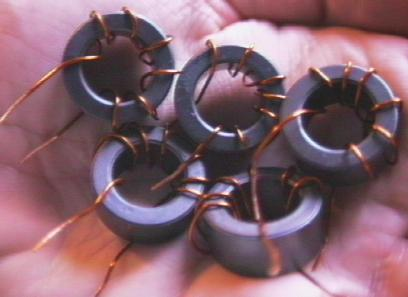
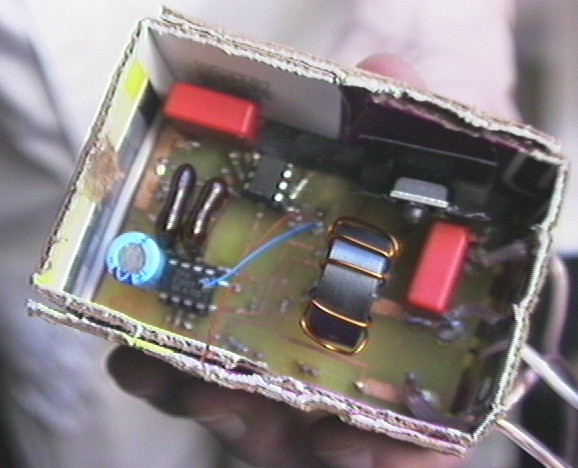

There are light dimmers all around my room that dim lights based on 0-12 volt control signals from a control board attached to my computer.
To keep everything cheap, I build the boards by hand.
Seth Sanders and Yi Zhang at the electrical engineering department at U.C. Berkeley helped me with the inductors. I bought some cores, and Yi showed me how to build these.

Here's a completed dimmer.
The design is the same as the Velleman K8003 dimmer, which is a fine kit that I have built several times.